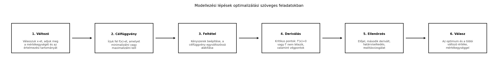
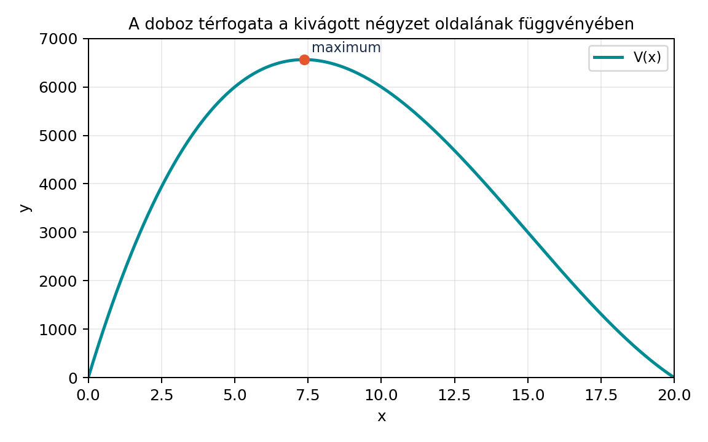

A csomagolástechnika, a vízvezeték-tervezés, a gyártási költségek és
a sportpálya-építés közös matematikai kérdése: hogyan válasszuk meg a
szabad paramétereket úgy, hogy valamilyen mennyiség a lehető legkisebb
vagy legnagyobb legyen? Az előző alfejezetben megtanultuk a teljes
függvényvizsgálatot; most a feladat fordított irányú: adva van egy
gyakorlati szituáció, és nekünk kell megalkotnunk a modellt, felírni a
célfüggvényt, majd megkeresni és értelmezni az abszolút
szélsőértéket.
A kulcskérdés nem mindig a deriválás technikája, hanem az, hogy jól
azonosítottuk-e a változót, a célfüggvényt, a feltételeket és az
értelmezési tartományt. Egy rosszul felírt célfüggvényből hiába
deriválunk pontosan, az eredmény a gyakorlatban használhatatlan
lesz.
12.2.2 Szemléletes kép: modellezési
ciklus
A szöveges optimalizálási feladatok megoldása mindig egy ciklus. A
következő ábra a lépéseket foglalja össze:

Modellezési lépések optimalizálási
szöveges feladatokban - A lépéseket a kidolgozott példák
végigkövetik.
Az ábra legfontosabb üzenete: a deriválási rutin csak a ciklus egyik
lépése. A modellezés és az ellenőrzés ugyanolyan fontos, mint a kritikus
pont megtalálása.
A szöveges feladatokból az optimumkeresést a következő, mindig azonos
lépésekkel építjük fel.
Változó választása. Egy betűvel jelöljük azt a
mennyiséget, amelyet szabadon választhatunk. Például a kivágott négyzet
élhossza legyen
cm, a henger sugara legyen
cm. A mértékegységet azonnal rögzítjük, mert a végén az ellenőrzéshez
kell.
Célfüggvény felírása. Megkeressük azt a
mennyiséget, amelyet maximalizálni vagy minimalizálni kell: térfogat,
anyagfelhasználás, futási idő, profit, költség. Ezt a választott változó
függvényeként írjuk fel.
Feltételek beépítése. Ha a célfüggvényben több
változó szerepel, a kényszeregyenletből az egyiket kifejezzük a
másikkal, így a célfüggvény egyváltozós lesz. Meghatározzuk az
értelmezési tartományt is, például egy kartonlap méretei miatt
cm.
Deriválás és kritikus pontok. Megkeressük az
egyenlet megoldásait, valamint azokat a pontokat, ahol a derivált nem
létezik. Zárt intervallumon a végpontokat is figyelembe vesszük.
Ellenőrzés. A második derivált előjele, az első
derivált előjelváltása vagy a határviselkedés alapján eldöntjük, hogy a
kritikus pont globális szélsőérték-e. Ellenőrizzük a mértékegységet és a
kapott szám realitását is.
Válasz megfogalmazása. Visszahelyettesítjük az
optimumot a feltételekbe, kiszámítjuk a többi változót, és a gyakorlati
kérdésre mértékegységgel válaszolunk.
12.2.3.1 Abszolút szélsőérték zárt
és nyílt intervallumon
A Teljes függvényvizsgálat alfejezetből
tudjuk: ha
folytonos a zárt
intervallumon, akkor a Weierstrass-tétel garantálja a maximum és a
minimum létezését, és a jelöltek a kritikus pontok és a végpontok. Ezért
ilyenkor elegendő ezeken a helyeken behelyettesíteni.
Nyílt vagy félig nyílt intervallumon nincs ilyen automatikus
garancia. Ha azonban a függvény deriválható, és egyetlen kritikus pontja
van, akkor a határviselkedésből gyakran eldönthetjük a szélsőérték
jellegét: ha például
az intervallum mindkét szélén, és a kritikus pontban lokális minimum
van, akkor az egyben globális minimum is.
12.2.4 1. példa: doboz maximális
térfogata
Példa. Egy
cm ×
cm-es kartonlap négy sarkából egybevágó,
oldalú négyzeteket vágunk ki, majd a lap oldalait felhajtva nyitott
tetejű dobozt készítünk. Mekkora
mellett lesz a doboz térfogata maximális?
Megoldás. Kövessük a modellezési lépéseket.
Változó:
a kivágott négyzet élhossza cm-ben. Az értelmezési tartomány:
,
mert a rövidebb oldal
cm, és mindkét sarokból
-et
vágunk ki.
A doboz méretei: hossza
,
szélessége
,
magassága
.
A célfüggvény a térfogat:
A feltétel már be van építve, az értelmezési tartomány
.
Deriválunk:
A kritikus egyenlet
,
ahonnan
Közelítőleg
cm és
cm. Az utóbbi kívül esik a
intervallumon, ezért csak
jelölt.
Ellenőrzés. A második derivált:
Az
helyen
,
tehát
-nek
lokális maximuma van. A határokon
és
esetén
,
ezért ez a lokális maximum globális maximum is.
Válasz. A maximális térfogat
A doboz mérete tehát körülbelül
cm ×
cm ×
cm, és a térfogata mintegy
liter. Ellenőrzés: a mértékegység
,
és a kapott érték reálisan illeszkedik egy kartonlaphoz.
Az alábbi ábra a térfogatfüggvény grafikonját mutatja:

A doboz térfogata a kivágott négyzet
oldalának függvényében - V(x)=x(50-2x)(40-2x), x∈(0,20) cm. A maximum
(7,362; 6564,2) közelében van; a számított érték a szövegben
található.
Példa. Tervezzünk
literes, felül-beforrasztott hengeres konzervdobozt úgy, hogy a
felületéhez a lehető legkevesebb bádog kelljen.
Megoldás. Legyen a henger sugara
cm, magassága
cm. A térfogat feltétel:
ezért
.
A célfüggvény a teljes felület:
Az értelmezési tartomány
.
Deriválunk:
A kritikus egyenlet:
tehát
Ellenőrzés:
minden
-ra,
ezért
-nak
globális minimuma van ebben a pontban. A magasság:
Azt kapjuk, hogy
,
vagyis a minimális anyagfelhasználású hengeres doboz átmérője és
magassága közel egyenlő. A minimális felület kb.
.
Ez a klasszikus konzervdoboz-eredmény, de a valódi gyártásban a lezárás,
a domborítás és a szabványok további feltételeket adnak.
12.2.6 3. példa: Fermat-elv és
fénytörés
Példa. Egy fénysugár az
pontból az
határfelületen át a
pontba jut. A felső közegben a fény sebessége
,
az alsóban
.
A határfelület egyenes, az
pont merőleges távolsága a határfelülettől
,
a
ponté
,
a két merőleges talppont vízszintes távolsága
.
Melyik
pontban kell a fénysugárnak átlépnie a határfelületet, ha a
Fermat-elv szerint a fény a legrövidebb idejű utat
választja?
Megoldás. Legyen a határfelület az
-tengely.
Az
pont koordinátája
,
a
ponté
,
a belépési ponté
.
A fény által megtett távolság:
A teljes futási idő:
Deriváljuk
-t:
A
feltétel:
Statikus változat (mint a PDF-ben)
A legrövidebb idejű út:
(,
,
,
,
;
a minimum
,
)
Ha a beesési szög
és a törési szög
,
akkor az ábrából:
Így a feltétel:
A törésmutató
,
tehát
,
amiből a jól ismert Snellius–Descartes-törvény:
Az ellenőrzéshez vizsgáljuk a második deriváltat. A
mindkét tagja szigorúan monoton növekvő az
szerinti deriváltjában, hiszen a
-es
tag deriváltja
,
a másik tag deriváltja pedig a negatív előjel után
.
Ezért
,
tehát
konvex, és a kritikus pont globális minimum. A Fermat-elv ezzel
visszaadja a fénytörés törvényét, és egyúttal azt is megmagyarázza,
miért hajlik meg a fény a határfelületen.
12.2.7 4. példa:
profitmaximalizálás
Példa. Egy vállalat árbevételi függvénye
,
költségfüggvénye
,
ahol
a heti termelt mennyiség ezer darabban, a pénz ezer forintban. Milyen
mellett maximális a profit?
Megoldás. A profit:
A derivált:
tehát a kritikus pont
ezer darab/hét. Mivel
,
a függvény konkáv, ezért
globális maximum. A maximális profit:
ezer Ft/hét.
Ugyanehhez a feltételhez jutunk, ha közvetlenül a határbevétel és a
határköltség egyenlőségét írjuk fel:
és
A profitmaximalizálás elsőrendű feltétele tehát
,
azaz határbevétel = határköltség. A másodrendű feltétel
,
ami itt
-ként
teljesül.
A készletgazdálkodás klasszikus modellje egyensúlyoz két ellentétes
költség között: ha ritkán rendelünk, a rendelési költség nagy, de a
raktározási költség kicsi; ha gyakran rendelünk kis tételekben, a
raktározás olcsó, de a rendelési költség megnő.
Legyen
az éves kereslet (db),
egy rendelés fix költsége (Ft),
pedig az egységenkénti éves tárolási költség (Ft/(db·év)). Ha
a rendelési tételnagyság, akkor az éves rendelések száma
,
az átlagos készlet
.
A teljes költség:
Deriválás:
A kritikus egyenlet:
tehát a gazdaságos rendelési mennyiség (Economic
Order Quantity, EOQ):
Mivel
minden
-ra,
a függvény konvex, ezért
globális minimum. Ha például
db/év,
Ft,
Ft/(db·év), akkor
Tehát évente
alkalommal érdemes rendelni.
12.2.9 Valós életbeli alkalmazás:
400 méteres futópálya tervezése
Tervezzünk egy atlétikai futópályát, amelynek belső szegélye két
párhuzamos egyenesből és két félkörből áll. A belső szegély hossza
m. A cél a belső, téglalap alakú gyepterület maximalizálása, például
futballpálya számára.
Legyen a félkörök sugara
méter, a két egyenes szakasz hossza
méter. A belső kerület:
Ebből:
A téglalap szélessége
,
hossza
,
tehát a terület:
Az értelmezési tartomány
,
mert
.
Deriváljuk a területet:
A kritikus pont:
Ellenőrzés:
,
tehát a függvény konkáv, ezért ez a pont globális maximum. Az egyenes
szakasz hossza:
A maximális belső terület:
A kapott téglalap mérete tehát körülbelül
m ×
m, ami nagyságrendileg illeszkedik a futballpályák szokásos méretéhez. A
modell korlátja, hogy a biztonsági sávokat, a lelátót, a csapatközlekedő
helyeket és a szabványos minimális egyenesszakasz-hosszakat nem vettük
figyelembe, ezért a tényleges tervezésnél további feltételeket kell
beépíteni.
Olvasd el a kérdést, és azonosítsd a keresett
mennyiséget. Válassz egy betűt a szabad változónak, és add meg
a mértékegységét.
Írd fel a célfüggvényt. Fogalmazd meg, mit kell
maximalizálni vagy minimalizálni, és írd fel a változó
függvényeként.
Építsd be a feltételeket. Ha a célfüggvényben több
változó van, használj kényszeregyenletet, és fejezd ki az egyiket a
másikkal. Add meg az értelmezési tartományt.
Keress kritikus pontokat. Oldd meg az
egyenletet, és nézd meg, hol nem létezik a derivált. Zárt intervallumon
a végpontokat is vedd figyelembe.
Döntsd el a szélsőérték jellegét. Használj második
deriváltat, előjelváltást vagy határviselkedést. Nyílt intervallumon
ellenőrizd, hogy a kritikus pont globális szélsőérték-e.
Számítsd ki a többi változót, és ellenőrizd az
eredményt. Helyettesíts vissza, ellenőrizd a mértékegységet, a
nagyságrendet és a realitást.
12.2.11 Tipikus hibák
A kritikus pont automatikus elfogadása. Az
önmagában nem elég: az
függvénynek
-ban
nincs szélsőértéke, hiába nulla a derivált.
A végpontok elhanyagolása. Zárt intervallumon a
maximum vagy minimum lehet a végpontban. Aki csak a derivált nullhelyeit
nézi, téves választ adhat.
A feltétel elfelejtése. A konzervdobozos feladatban
a felület kétváltozós,
és
függvénye. Ha a térfogati feltételt nem használjuk fel, nem kapunk
egyváltozós optimumfeladatot.
Az értelmezési tartomány figyelmen kívül hagyása. A
dobozos példában a megoldóképlet két gyököt adott, de az egyik kívül
esett a lehetséges tartományon, ezért fizikailag nem volt
értelmezhető.
A mértékegység elhagyása. A
önmagában kevés;
vagy
liter már valódi mérnöki válasz.
12.2.12 Önellenőrzés
Igaz-e, hogy ha
,
akkor
-nek
lokális szélsőértéke van
-ben?
Egy
m kerületű téglalap maximális területe mekkora?
Mi a célfüggvény a fénytöréses modellben?
Írd fel az EOQ-modell költségfüggvényét!
Milyen elsőrendű feltétel adódik a profitmaximumra?
A futópályás modellben mi az
-re
vonatkozó értelmezési tartomány?
12.2.13 Feladatok
1. feladat (A)
Egy téglalap kerülete
m. Mekkorák az oldalai, ha a területe maximális? (a) Írd fel a
célfüggvényt, (b) keresd meg a kritikus pontot, (c) ellenőrizd, hogy
maximum van.
2. feladat (A)
Legyen
a napi termelési költség, ahol
ezer darab. Hol minimális a költség?
3. feladat (B)
Egy felül nyitott, henger alakú tartály űrtartalma
cm³. A tartály anyagfelhasználását minimalizáljuk. Mekkora legyen a
sugara és a magassága?
4. feladat (B)
Egy úszó a parton áll, és egy vízbe esett tárgyhoz kell eljutnia. A
tárgy a part egyenes szakaszától
m-re, a part mentén az indulási ponttól mért vetülete
m-re van. Az úszó a parton
m/s sebességgel fut, a vízben
m/s sebességgel úszik. Hol ugorjon vízbe, hogy a célba érés ideje
minimális legyen?
5. feladat (C)
Vezesd le általánosan az EOQ-képletet: mutasd meg, hogy a
függvénynek
esetén pontosan egy kritikus pontja van, ott a második derivált pozitív,
és a határviselkedésből következik, hogy ez globális minimum.
6. feladat (D)
Egy vízszolgáltató a folyóparton lévő szivattyúállomástól a part mentén
csövet fektet, majd onnan a partról a gyárig ferde csőszakaszt épít. A
gyár a parttól
m-re van, a gyár partra eső vetülete a szivattyútól
m-re. A part menti cső költsége
Ft/m, a ferde cső költsége
Ft/m. Hol legyen a leágazási pont a parton, ha a teljes csőhálózat
költségét minimalizáljuk? Mennyi lesz a minimális költség?
12.2.14 Megoldások
Önellenőrzés – válaszok
Hamis; például
esetén
,
de nincs szélsőérték.
A
m kerületű téglalap maximális területe
m ×
m-es négyzet, területe
m².
A fénytörésnél a célfüggvény a teljes futási idő:
.
EOQ:
.
Profitmaximum:
,
azaz határbevétel = határköltség.
A futópályás modellben
.
1. feladat (A)
Legyen a téglalap egyik oldala
m, a másik
m. Célfüggvény:
.
Derivált:
,
innen
.
Mivel
,
ez maximum. A téglalap négyzet, oldalai
m és
m, területe
m².
2. feladat (A)
.
Kritikus pontok:
,
.
Behelyettesítve:
,
,
,
.
A legkisebb érték
,
tehát a költség az intervallum bal végpontjában minimális. Ez a példa
mutatja, hogy a végpontokat nem szabad elhagyni.
3. feladat (B)
A tartály térfogata
,
így
.
A felülete, mivel felül nyitott,
.
Derivált:
,
innen
cm. Ellenőrzés:
,
tehát minimum. A magasság
cm. Tehát a sugár és a magasság közel egyenlő.
4. feladat (B)
Legyen
a parton futott távolság méterben. Akkor az úszási szakasz vízszintes
vetülete
,
a merőleges távolság
m, tehát az úszási hossz
.
A teljes idő:
Derivált:
A
feltételből:
Legyen
.
Akkor
,
amiből
,
tehát
m. A futási szakasz
m. Ellenőrzés:
,
mert a második tag második deriváltja pozitív. Az úszó tehát majdnem a
célponttal szembeni partrészig fut, és csak az utolsó kb.
m vízszintes távolságot ússza le.
5. feladat (C)
A
függvény deriváltja:
A
egyenlet:
Mivel
,
pontosan egy kritikus pont van:
.
A második derivált
minden
-ra,
tehát
konvex, ezért a kritikus pont lokális minimum. A határviselkedés:
esetén
;
esetén
.
Konvex függvény esetén a lokális minimum globális minimum, tehát
valóban a gazdaságos rendelési mennyiség.
6. feladat (D)
Legyen a leágazási pont a szivattyútól
m-re a parton. A part menti szakasz hossza
,
a ferde szakaszé
.
A teljes költség:
Deriválás:
A feltétel:
Legyen
.
Akkor
Négyzetre emelve:
,
amiből
,
tehát
,
,
m. Így
m. Ellenőrzés:
,
tehát ez minimum. A minimális költség:
Tehát a leágazást a szivattyútól kb.
m-re érdemes kialakítani.
12.2.15 Rövid összefoglaló
A gyakorlati optimumfeladatok megoldásának kulcsa a
modellezés: válasszunk szabad változót, írjuk fel a
célfüggvényt, építsük be a feltételeket, majd keressük meg a kritikus
pontokat, és ellenőrizzük a szélsőérték jellegét. Zárt intervallumon a
jelöltek a kritikus pontok és a végpontok; nyílt intervallumon a
határviselkedés és a második derivált segít dönteni. Kidolgoztuk a doboz
maximális térfogatát, a minimális anyagú hengert, a Fermat-elvből
levezetett Snellius–Descartes-törvényt, a profitmaximalizálás
feltételét és az EOQ-képletet. A 400 méteres futópálya tervezése
megmutatta, hogyan kell az optimumot mértékegységgel és
realitásvizsgálattal értelmezni.
A klasszikus eredmények (Fermat-elv, EOQ, profitmaximalizálás)
stabil, tankönyvekben megtalálható ismeretek; konkrét URL-t vagy
oldalszámot nem hivatkoztam ellenőrzöttként. A példákban szereplő
számadatok szemléltető, kerekített modellértékek, nem mért statisztikai
adatok.